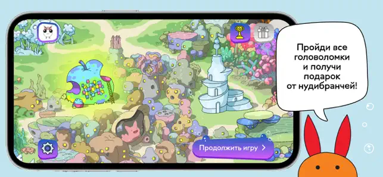
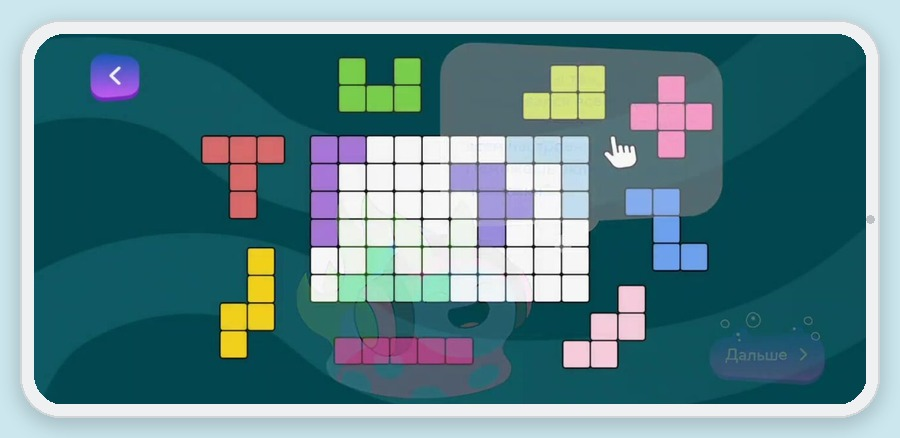
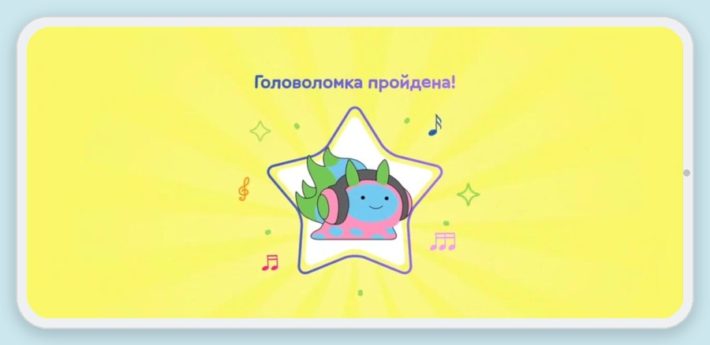

От брифа до сдачи заказчику
Nudibranches — обучающая игра для детского косметического бренда
Для бренда детской косметики Nudibranches вела разработку развивающего мобильного приложения на Unity — от идеи и брифа до релиза. Вселенная игры — 9 подводных «домиков»-уровней, в каждом три комнаты и шесть мини-игр на логику, память и пространственное мышление. Ребёнок проходит уровни, попутно знакомясь с персонажами и продукцией бренда.



Альфа-Банк — квест по финансовой грамотности
Офлайн-квест для отделений банка: дети 9–14 лет решают финансовые головоломки в вымышленном городе Котосити, знакомясь с детской картой и приложением банка по пути.
Проект реализован в плотном сотрудничестве с командой продукта Альфа Kids и командой маркетинга Альфа-Банка — с жёсткими требованиями к стилистике, визуалу и подаче материала.
- Команды формируются случайно — через стартовые задания, развивающие лидерство
- Задания основаны на жизненных ситуациях: накопления, кэшбек, выгодные покупки
- Видеоинструкция для организаторов — квест проводим в отделении любого размера


Уралхим — новогодние игры для детей сотрудников
Две настольные игры как корпоративный новогодний подарок: «Уралхим Мемо» (0–5 лет) — своя разработка, и «Уралхим Кругозорник» (6–16 лет) — адаптация под фирменный стиль.
- Реальные референсы отрасли: форма шахтёров, чертежи производственных объектов
- Дизайн адаптирован под брендбук и габариты подарочной коробки
- Интерактивная дорожная карта проекта — от ТЗ до отгрузки
- 45 уникальных иллюстраций, отрисованных специально для заказчика


Плюс 10+ других проектов для детских образовательных продуктов — от идеи до сдачи, без претензий по итогам приёмки.